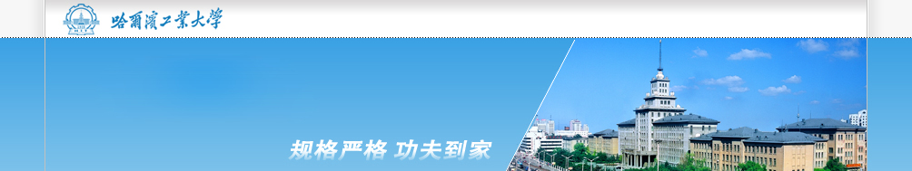

!DOCTYPE HTML PUBLIC "-//W3C//DTD HTML 4.01 Transitional//EN"
"http://www.w3.org/TR/html4/loose.dtd">
<html>
<meta charset="UTF-8">
<head>
<div>

</div>
<form name="form1" action="AddApp" method="post">
	<center>
		<p>
			开始时间: <input type="text" name="starttime" />
		</p>
		<p>
			结束时间: <input type="text" name="endtime" />
		</p>
		<p>
			预约地址: <input type="text" name="address">
		</p>
		<p>
			预留信息：<input type="text" name="message">
		</p>
		<input type="submit" value="Submit" />
	</center>
</form>
<div align="right">
  <span id=localtime></span>
<script type="text/javascript">
function showLocale(objD)
{
	var str,colorhead,colorfoot;
	var yy = objD.getYear();
	if(yy<1900) yy = yy+1900;
	var MM = objD.getMonth()+1;
	if(MM<10) MM = '0' + MM;
	var dd = objD.getDate();
	if(dd<10) dd = '0' + dd;
	var hh = objD.getHours();
	if(hh<10) hh = '0' + hh;
	var mm = objD.getMinutes();
	if(mm<10) mm = '0' + mm;
	var ss = objD.getSeconds();
	if(ss<10) ss = '0' + ss;
	var ww = objD.getDay();
	if  (ww==0)  ww="星期日";
	if  (ww==1)  ww="星期一";
	if  (ww==2)  ww="星期二";
	if  (ww==3)  ww="星期三";
	if  (ww==4)  ww="星期四";
	if  (ww==5)  ww="星期五";
	if  (ww==6)  ww="星期六";
	colorfoot="</font>"
	str =yy + "-" + MM + "-" + dd + " " + hh + ":" + mm + ":" + ss + "  " + ww + colorfoot;
	return(str);
}
function tick()
{
	var today;
	today = new Date();
	document.getElementById("localtime").innerHTML = showLocale(today);
	window.setTimeout("tick()", 1000);
}
tick();
</script>
</div>
</html>
